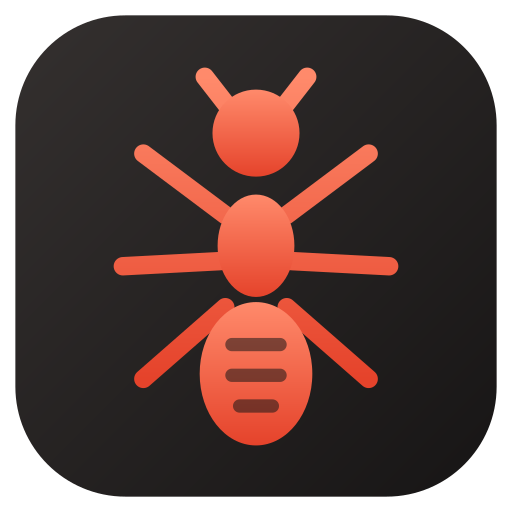
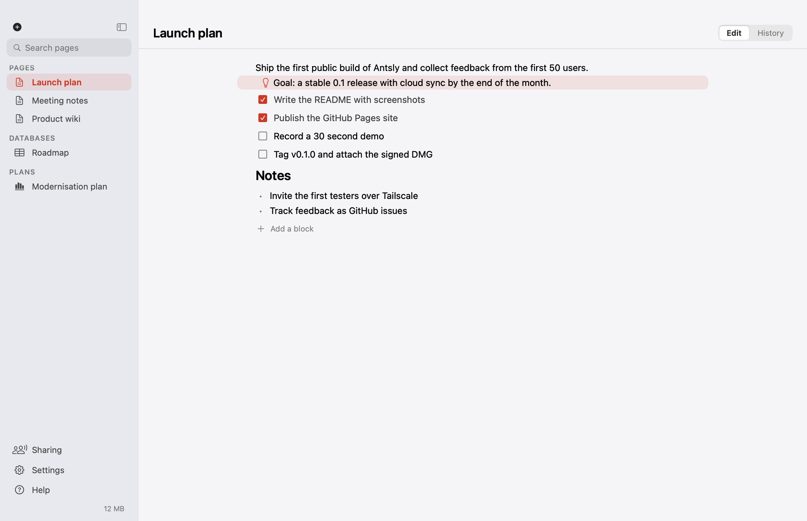
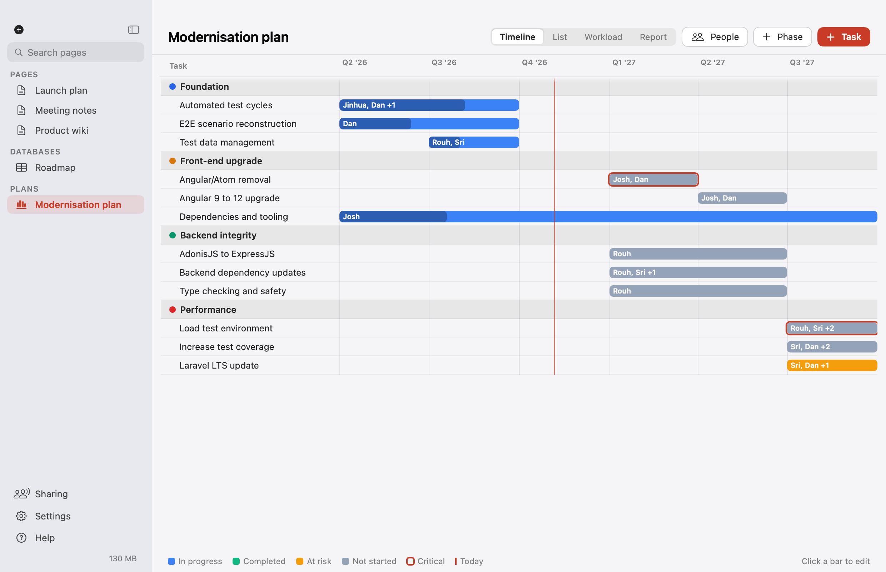
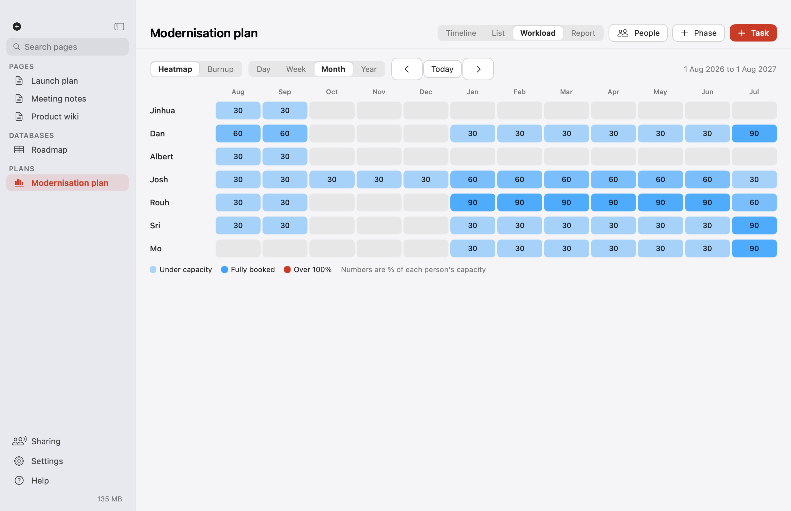
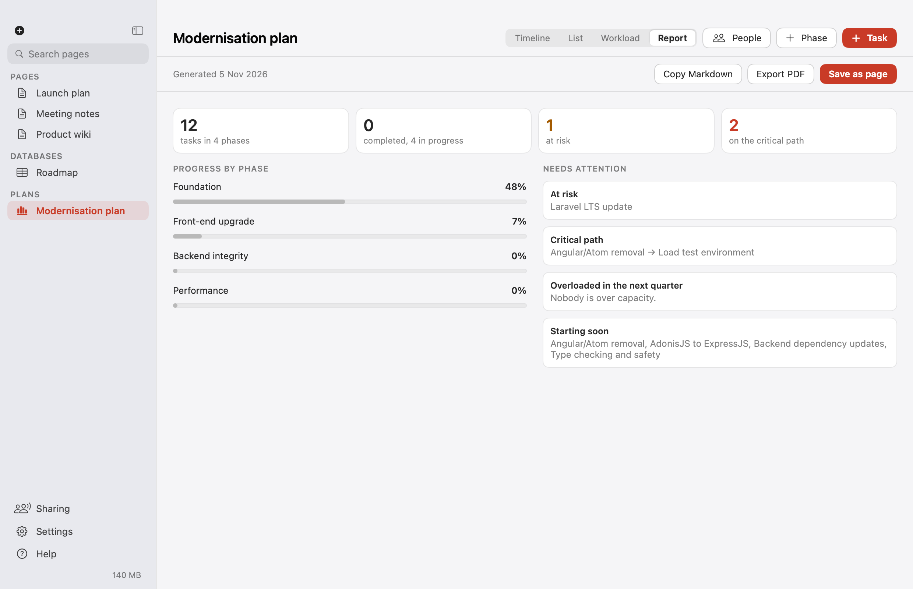

Antsly
Notes, documents, databases and project plans in one native Mac app. Plain files you own, version history with git, and live collaboration over Tailscale.
DownloadSource on GitHub
Block editor
Text, headings, to-dos, callouts and code. Press / to change a block.
Project plans
Timeline, capacity-based resource heatmap by day to year, burnup and one-click status reports.
Version history
Git under the hood, with diffs, restore and a friendly conflict picker.
GitHub issues
Pulled into a database and pushed back with your own sign-in.
Cloud sync
One switch puts your workspace in iCloud Drive.
Live collaboration
Invite people on your Tailscale network and edit together in real time.


